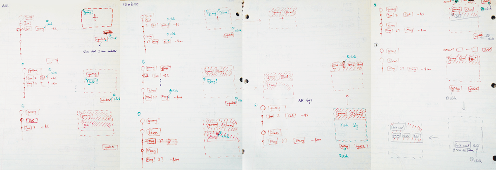
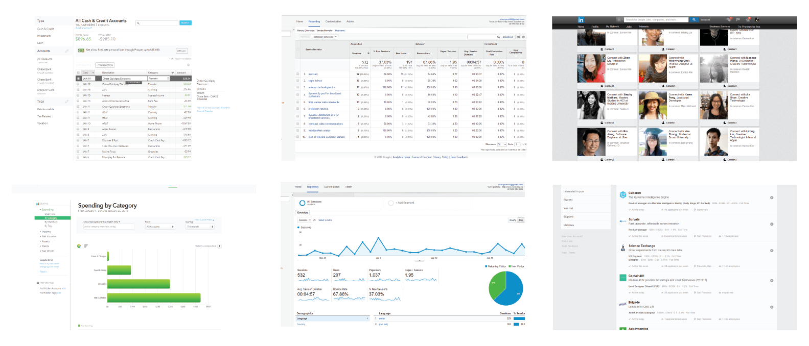
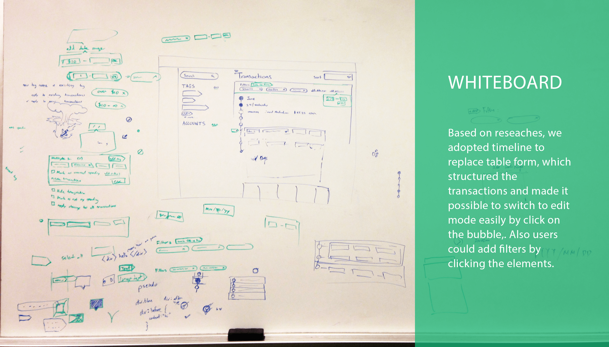
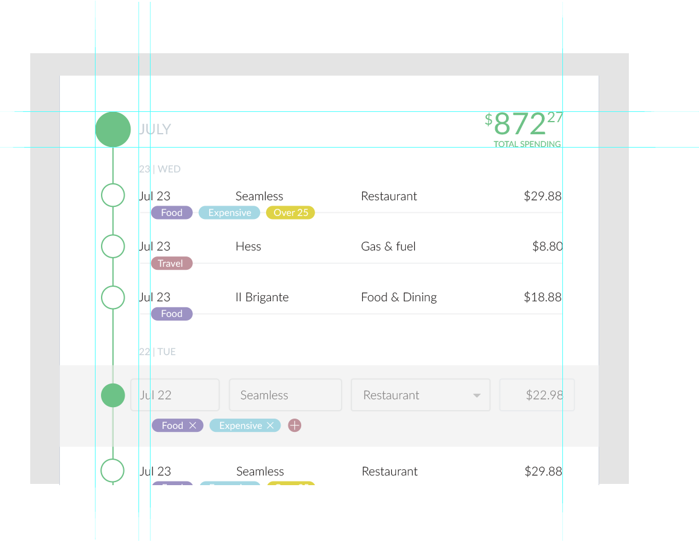
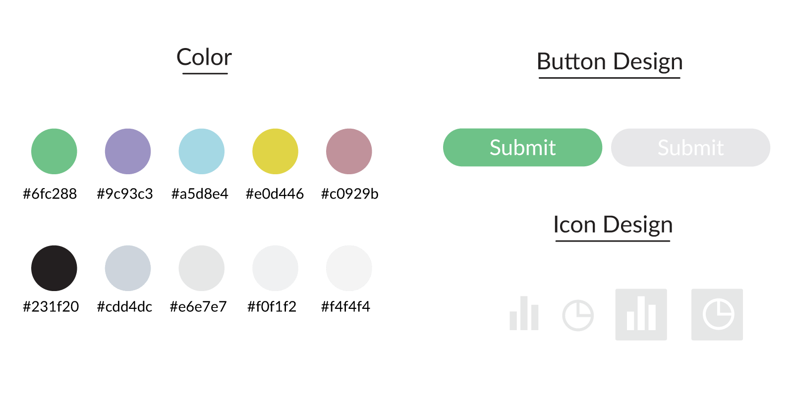
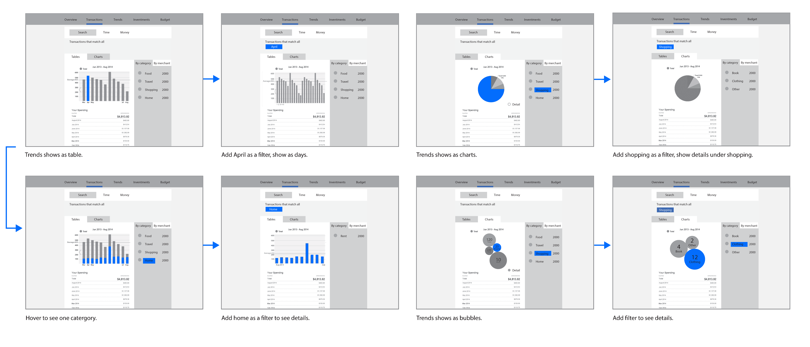
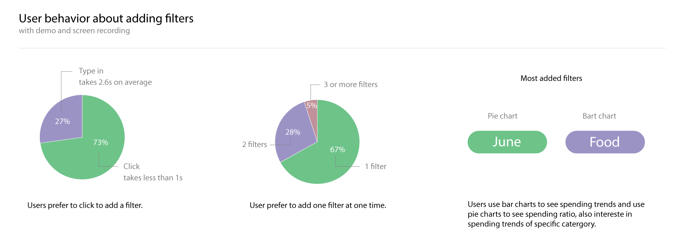
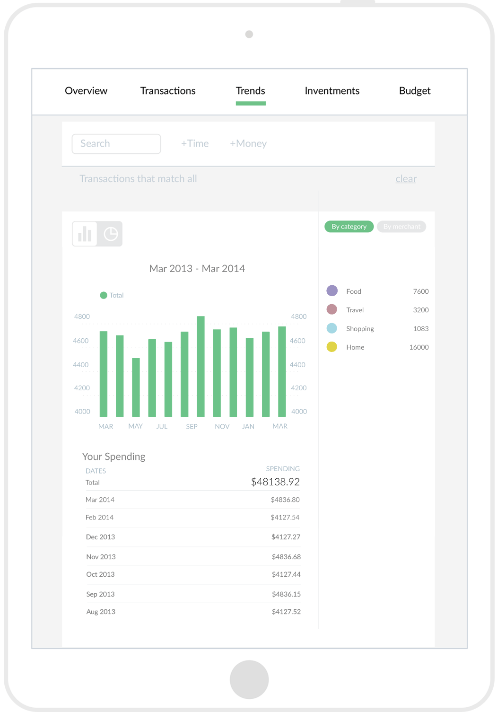
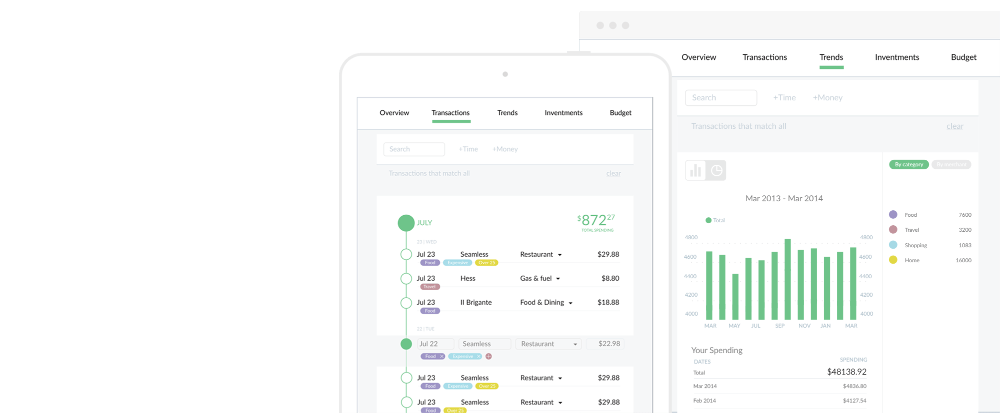

Pefin
UX design of transaction management
UX design and prototype | June 2014-December 2015
All of the UI was designed for the web and I displayed on an iPad since I was just displaying the part I designed.
-
I worked at Pefin as a UX designer for six months, and was in charge of designing two of five core functions. One was designing the process of interacting with the transactions, the other was visualizing the trend data.
-
I want to know how much I spend
on my wedding.Based on our client’s feedback, costumed tags could be added to transactions and be used as filters to check the total amount. So we had to figure out the logic behind the chosen filters.
-

Logic comes the first.
To make the logic clear, I created two kinds of filter pools. One was for “Must-have” tags, and the other was for “May-have” tags. This allowed users to choose any combination of filters. Later, we found that this system was too complicated for users, so we saved it for advanced settings.
Quick sketch for different scenarios
-

Design comes the next.
Traditional table lists and charts
Based on customer research, we decided to do the transaction user interface as a table list. After studying the precedents, I found most of the table lists were boring and lacking structure, they were a web version of Excel. So I transformed part of the information into a visualization that could be understood immediately so that users could focus on transactions without distraction.
Into the details
Tags shows below each transaction. Users click a tag to add as a filter and edit filters by clicking bubble to enter a edit mode.
1. Space is better than lines.
I removed the boxes around elements to make a cleaner user interface.
2. Different sizes for different layers.
Users could get a clearer picture of what transactions were made each day by viewing the bubble tree.
3. Use colors properly.
I made a list of colors which complemented each other nicely. Moreover, any color could be told from others easily at the same time. After tags attaching to each transaction, users tended to click tags much more often than typing in a search bar. While people could only added filter by typing in a search bar when using Mint, our competitive product.
Other colors are not shown here.
To make it fresh and friendly, I used low saturated colors and made a mechanism to select which colors go with which filters. This feature alone made me realize that there is no such thing as an easy design task since each individual part impacts the overall product.
-

It’s always fun to play with data.
The webpages were designed with both bar and pie charts for different needs. 90% users interacted with both pie charts and bar charts. We also had bubble charts or not for a A/B testing, and we removed it for this version.
"Hover" is better than "click and clear".
Based on the reseaches, I designed with a new feature which allows users to hover on a specific category to see its spending trends instead of clicking it to add a filter. It also saves time of clearing filter pool. In fact, users' interactions with the elements increased by 167% on this page. On iPad, users press instead of hovering.
Some bars move slower to grab more attention from the users.
-

Making pixels perfect.
I did not have the chance to finalize the product, and would love to show you more, however this project is under NDA. What is shown here is only a sneak peek. Please contact me for more details.
-
-
If you have feedback about this project, please comment on Medium.